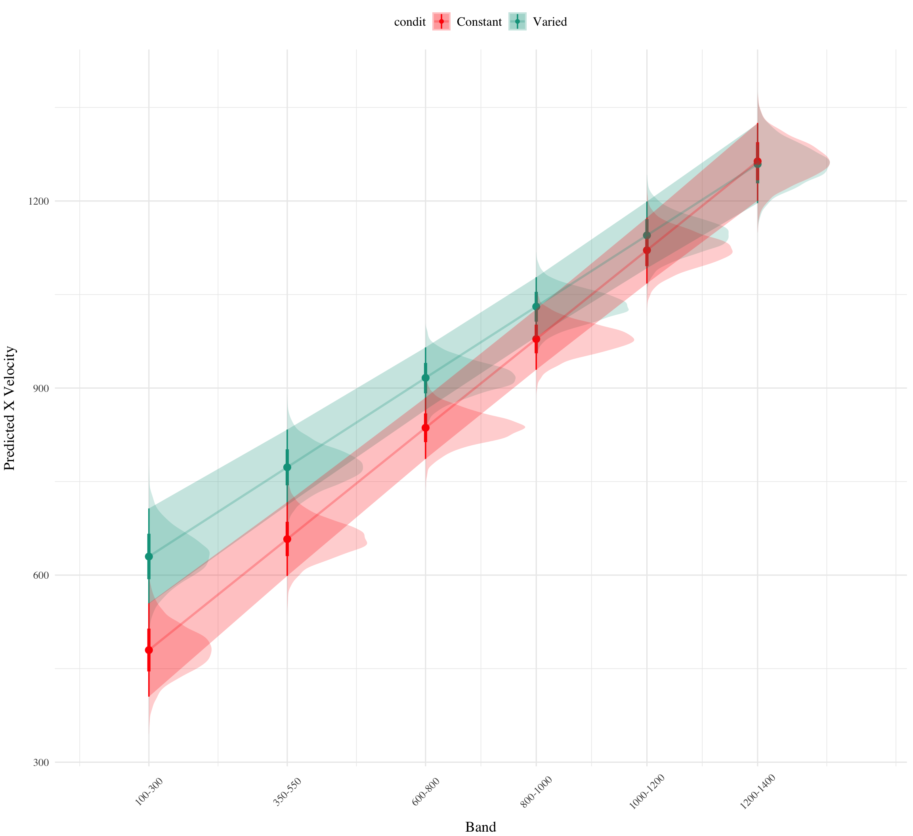

To assess differences between groups, we used Bayesian Mixed Effects Regression. Model fitting was performed with the brms package in R Bürkner (2017), and descriptive stats and tables were extracted with the BayestestR package Makowski et al. (2019). Mixed effects regression enables us to take advantage of partial pooling, simultaneously estimating parameters at the individual and group level. Our use of Bayesian, rather than frequentist methods allows us to directly quantify the uncertainty in our parameter estimates, as well as circumventing convergence issues common to the frequentist analogues of our mixed models. For each model, we report the median values of the posterior distribution, and 95% credible intervals.
Each model was set to run with 4 chains, 5000 iterations per chain, with the first 2500 of which were discarded as warmup chains. Rhat values were generally within an acceptable range, with values <=1.02 (see appendix for diagnostic plots). We used uninformative priors for the fixed effects of the model (condition and velocity band), and weakly informative Student T distributions for for the random effects.
We compared varied and constant performance across two measures, deviation and discrimination. Deviation was quantified as the absolute deviation from the nearest boundary of the velocity band, or set to 0 if the throw velocity fell anywhere inside the target band. Thus, when the target band was 600-800, throws of 400, 650, and 1100 would result in deviation values of 200, 0, and 300, respectively. Discrimination was measured by fitting a linear model to the testing throws of each subjects, with the lower end of the target velocity band as the predicted variable, and the x velocity produced by the participants as the predictor variable. Participants who reliably discriminated between velocity bands tended to have positive slopes with values ~1, while participants who made throws irrespective of the current target band would have slopes ~0.
Code
# Create the data frame for the tabletable_data<-data.frame( Type =c(rep("Population-Level Effects", 4),rep("Group-Level Effects", 2),"Family Specific Parameters"), Parameter =c("\\(\\beta_0\\)", "\\(\\beta_1\\)", "\\(\\beta_2\\)", "\\(\\beta_3\\)","\\(\\sigma_{\\text{Intercept}}\\)", "\\(\\sigma_{\\text{bandInt}}\\)", "\\(\\sigma_{\\text{Observation}}\\)"), Term =c("(Intercept)", "conditVaried", "bandInt", "conditVaried:bandInt","sd__(Intercept)", "sd__bandInt", "sd__Observation"), Description =c("Intercept representing the baseline deviation", "Effect of condition (Varied vs. Constant) on deviation", "Effect of target velocity band (bandInt) on deviation", "Interaction effect between training condition and target velocity band on deviation","Standard deviation for (Intercept)", "Standard deviation for bandInt", "Standard deviation for Gaussian Family"))|>mutate( Term =glue::glue("<code>{Term}</code>"))# Create the tablekable_out<-table_data%>%kbl(format ='html', escape =FALSE, booktabs =TRUE, #caption = '<span style = "color:black;"><center><strong>Table 1: General Model Structure Information</strong></center></span>', col.names =c("Type", "Parameter", "Term", "Description"))%>%kable_styling(position="left", bootstrap_options =c("hover"), full_width =FALSE)%>%column_spec(1, bold =FALSE, border_right =TRUE)%>%column_spec(2, width ='4cm')%>%column_spec(3, width ='4cm')%>%row_spec(c(4, 7), extra_css ="border-bottom: 2px solid black;")%>%pack_rows("", 1, 4, bold =FALSE, italic =TRUE)%>%pack_rows("", 5, 6, bold =FALSE, italic =TRUE)%>%pack_rows("", 7, 7, bold =FALSE, italic =TRUE)kable_out
Table 1: Mixed model structure and coefficient descriptions
Type
Parameter
Term
Description
Population-Level Effects
\(\beta_0\)
(Intercept)
Intercept representing the baseline deviation
Population-Level Effects
\(\beta_1\)
conditVaried
Effect of condition (Varied vs. Constant) on deviation
Population-Level Effects
\(\beta_2\)
bandInt
Effect of target velocity band (bandInt) on deviation
Population-Level Effects
\(\beta_3\)
conditVaried:bandInt
Interaction effect between training condition and target velocity band on deviation
Group-Level Effects
\(\sigma_{\text{Intercept}}\)
sd__(Intercept)
Standard deviation for (Intercept)
Group-Level Effects
\(\sigma_{\text{bandInt}}\)
sd__bandInt
Standard deviation for bandInt
Family Specific Parameters
\(\sigma_{\text{Observation}}\)
sd__Observation
Standard deviation for Gaussian Family
Results
Testing Phase - No feedback.
In the first part of the testing phase, participants are tested from each of the velocity bands, and receive no feedback after each throw.
Deviation From Target Band
Descriptive summaries testing deviation data are provided in Table 2 and Figure 1. To model differences in accuracy between groups, we used Bayesian mixed effects regression models to the trial level data from the testing phase. The primary model predicted the absolute deviation from the target velocity band (dist) as a function of training condition (condit), target velocity band (band), and their interaction, with random intercepts and slopes for each participant (id).
Figure 3: E1. Predicted Means Per Condition and Band, and Average Marginal Effect (Constant - Varied)
The model predicting absolute deviation (dist) showed clear effects of both training condition and target velocity band (Table X). Overall, the varied training group showed a larger deviation relative to the constant training group (β = 135, 95% CI [43, 231]). Deviation also depended on target velocity band, with lower bands showing less deviation. See Table 3 for full model output.
Discrimination between Velocity Bands
In addition to accuracy/deviation. We also assessed the ability of participants to reliably discriminate between the velocity bands (i.e. responding differently when prompted for band 600-800 than when prompted for band 150-350). Table 4 shows descriptive statistics of this measure, and Figure 1 visualizes the full distributions of throws for each combination of condition and velocity band. To quantify discrimination, we again fit Bayesian Mixed Models as above, but this time the dependent variable was the raw x velocity generated by participants.
Table 5: Experiment 1. Bayesian Mixed Model Predicting Vx as a function of condition (Constant vs. Varied) and Velocity Band
Term
Estimate
Est.Error
95% CrI Lower
95% CrI Upper
pd
Rhat
ESS
Intercept
439.42
39.13
362.91
517.87
1.00
1.00
497.68
conditVaried
146.06
55.81
35.96
254.70
0.99
1.00
569.96
Band
0.69
0.04
0.59
0.77
1.00
1.00
672.14
conditVaried:Band
-0.12
0.06
-0.25
0.00
0.97
1.01
750.18
See Table 5 for the full model results. The estimated coefficient for training condition (β = 146, 95% CI [35.96, 254.70]) suggests that the varied group tends to produce harder throws than the constant group. More relevant to the issue of discrimination is the slope on Velocity Band (β = 0.69, 95% CI [.59, .77]). Although the median slope does fall underneath the ideal of value of 1, the fact that the 95% credible interval does not contain 0 provides strong evidence that participants exhibted some discrimination between bands. The slope coefficient (β = 0.69 ) also seems in accordance with an examination of Table 4, which shows that average x-velocity fell within the range of the target band for four out of six of the bands (\(4/6\)=.67).
Code
e1_vxBMM|>emmeans(~condit+bandInt, at =list(bandInt =c(100, 350, 600, 800, 1000, 1200)))|>gather_emmeans_draws()|>ggplot(aes(x =bandInt, y =.value, color =condit, fill =condit))+stat_dist_pointinterval()+stat_lineribbon(alpha =.25, size =1, .width =c(.95))+ylab("Predicted X Velocity")+xlab("Band")+scale_x_continuous(breaks =c(100, 350, 600, 800, 1000, 1200), labels =levels(test$vb), limits =c(0, 1400))+theme(axis.text.x =element_text(angle =45, hjust =0.5, vjust =0.5))

Figure 5: Conditional effect of training condition and Band. Ribbons indicate 95% HDI.
Figure 6: Slope estimates by participant - ordered from lowest to highest within each condition.
Code
nTop<-2combined_df<-left_join(random_effects, fixed_effects, by =join_by(".chain", ".iteration", ".draw"))|>rename(bandInt_RF =bandInt)|>right_join(new_data_grid, by =join_by("id"),relationship="many-to-many")|>mutate( fixed_effects =b_Intercept+(bandInt*b_bandInt)+condit_dummy*b_conditVaried+(bandInt*condit_dummy)*`b_conditVaried:bandInt` , # Note: Replace : with correct operator random_effects =Intercept+bandInt_RF, # Assuming random effects for intercept and bandInt estimate =fixed_effects+random_effects)combined_df|>filter(id%in%(indv_coefs|>filter(rank<=nTop)|>pull(id)))|>group_by(id, bandInt)|>sample_n(200)|>ggplot(aes(x=bandInt,y=estimate))+geom_abline(aes(intercept=Intercept+b_Intercept, slope=bandInt_RF+b_bandInt), color="grey50", alpha=.1)+geom_abline(data=indv_coefs|>filter(id%in%(indv_coefs|>filter(rank<=nTop)|>pull(id))),aes(intercept=Estimate.Intercept,slope=Estimate.bandInt),color="red")+stat_pointinterval(data=test|>filter(id%in%(indv_coefs|>filter(rank<=nTop)|>pull(id))), aes(x=bandInt,y=vx, color=vb))+facet_nested_wrap(vars(condit,id),ncol =2)+scale_x_continuous(breaks =c(100, 350, 600, 800, 1000, 1200), labels =levels(test$vb), limits =c(0, 1400))+theme(axis.text.x =element_text(angle =45, hjust =0.5, vjust =0.5))+ylab("X Velocity")+xlab("Band")
Figure 7: Subset of Varied and Constant Participants with the largest estimated slope values. Red lines represent the best fitting line for each participant, gray lines are 200 random samples from the posterior distribution. Colored points and intervals at each band represent the empirical median and 95% HDI.
Figure 8: Subset of Varied and Constant Participants with the smallest estimated slope values. Red lines represent the best fitting line for each participant, gray lines are 200 random samples from the posterior distribution. Colored points and intervals at each band represent the empirical median and 95% HDI.
E1 Results Discussion
NEEDS TO BE WRITTEN
References
Bürkner, P.-C. (2017). Brms: An R Package for Bayesian Multilevel Models Using Stan. Journal of Statistical Software, 80, 1â28. https://doi.org/10.18637/jss.v080.i01
Makowski, D., Ben-Shachar, M. S., & Lüdecke, D. (2019). bayestestR: Describing Effects and their Uncertainty, Existence and Significance within the Bayesian Framework. Journal of Open Source Software, 4(40), 1541. https://doi.org/10.21105/joss.01541
Source Code
---title: "HTW E1 Testing"categories: [Analysis, R, Bayesian]---```{r setup, include=FALSE}source(here::here("Functions", "packages.R"))test <- readRDS(here("data/e1_08-04-23.rds")) |> filter(expMode2 == "Test") options(brms.backend="cmdstanr",mc.cores=4)e1Sbjs <- test |> group_by(id,condit) |> summarise(n=n())testAvg <- test %>% group_by(id, condit, vb, bandInt,bandType,tOrder) %>% summarise(nHits=sum(dist==0),vx=mean(vx),dist=mean(dist),sdist=mean(sdist),n=n(),Percent_Hit=nHits/n)```## Analyses StrategyTo assess differences between groups, we used Bayesian Mixed Effects Regression. Model fitting was performed with the brms package in R @burknerBrmsPackageBayesian2017, and descriptive stats and tables were extracted with the BayestestR package @makowskiBayestestRDescribingEffects2019a. Mixed effects regression enables us to take advantage of partial pooling, simultaneously estimating parameters at the individual and group level. Our use of Bayesian, rather than frequentist methods allows us to directly quantify the uncertainty in our parameter estimates, as well as circumventing convergence issues common to the frequentist analogues of our mixed models. For each model, we report the median values of the posterior distribution, and 95% credible intervals.Each model was set to run with 4 chains, 5000 iterations per chain, with the first 2500 of which were discarded as warmup chains. Rhat values were generally within an acceptable range, with values <=1.02 (see appendix for diagnostic plots). We used uninformative priors for the fixed effects of the model (condition and velocity band), and weakly informative Student T distributions for for the random effects. We compared varied and constant performance across two measures, deviation and discrimination. Deviation was quantified as the absolute deviation from the nearest boundary of the velocity band, or set to 0 if the throw velocity fell anywhere inside the target band. Thus, when the target band was 600-800, throws of 400, 650, and 1100 would result in deviation values of 200, 0, and 300, respectively. Discrimination was measured by fitting a linear model to the testing throws of each subjects, with the lower end of the target velocity band as the predicted variable, and the x velocity produced by the participants as the predictor variable. Participants who reliably discriminated between velocity bands tended to have positive slopes with values ~1, while participants who made throws irrespective of the current target band would have slopes ~0. {{< include ../Misc/bmm_table.qmd >}}## Results### Testing Phase - No feedback. In the first part of the testing phase, participants are tested from each of the velocity bands, and receive no feedback after each throw. #### Deviation From Target BandDescriptive summaries testing deviation data are provided in @tbl-e1-test-nf-deviation and @fig-e1-test-dev. To model differences in accuracy between groups, we used Bayesian mixed effects regression models to the trial level data from the testing phase. The primary model predicted the absolute deviation from the target velocity band (dist) as a function of training condition (condit), target velocity band (band), and their interaction, with random intercepts and slopes for each participant (id). \begin{equation}dist_{ij} = \beta_0 + \beta_1 \cdot condit_{ij} + \beta_2 \cdot band_{ij} + \beta_3 \cdot condit_{ij} \cdot band_{ij} + b_{0i} + b_{1i} \cdot band_{ij} + \epsilon_{ij}\end{equation}```{r}#| label: tbl-e1-test-nf-deviation#| tbl-cap: "Testing Deviation - Empirical Summary"#| tbl-subcap: ["Constant Testing - Deviation", "Varied Testing - Deviation"]#| layout-ncol: 2#| echo: fencedresult <-test_summary_table(test, "dist", mfun =list(mean = mean, median = median, sd = sd))result$constantresult$varied``````{r}#| label: fig-e1-test-dev#| fig-cap: E1. Deviations from target band during testing without feedback stage. test |>ggplot(aes(x = vb, y = dist,fill=condit)) +stat_summary(geom ="bar", position=position_dodge(), fun = mean) +stat_summary(geom ="errorbar", position=position_dodge(.9), fun.data = mean_se, width = .4, alpha = .7) +labs(x="Band", y="Deviation From Target")``````{r}#| label: tbl-e1-bmm-dist#| tbl-cap: "Experiment 1. Bayesian Mixed Model predicting absolute deviation as a function of condition (Constant vs. Varied) and Velocity Band"#contrasts(test$condit) # contrasts(test$vb)modelName <-"e1_testDistBand_RF_5K_Ml1"e1_distBMM <-brm(dist ~ condit * bandInt + (1+ bandInt|id),data=test,file=paste0(here::here("data/model_cache",modelName)),iter=5000,chains=4)mp1 <-GetModelStats(e1_distBMM) |>kable(escape=F,booktabs=T)mp1``````{r}#| label: fig-e1-bmm-dist#| fig-cap: E1. Conditioinal Effect of Training Condition and Band. Ribbon indicated 95% Credible Intervals. e1_distBMM |>emmeans( ~condit + bandInt, at =list(bandInt =c(100, 350, 600, 800, 1000, 1200))) |>gather_emmeans_draws() |>ggplot(aes(x = bandInt, y = .value, color = condit, fill = condit)) +stat_dist_pointinterval() +stat_lineribbon(alpha = .25, size =1, .width =c(.95)) +ylab("Predicted Deviation") +xlab("Velocity Band")+scale_x_continuous(breaks =c(100, 350, 600, 800, 1000, 1200), labels =levels(test$vb), limits =c(0, 1400)) +theme(axis.text.x =element_text(angle =45, hjust =0.5, vjust =0.5)) ``````{r}#| label: fig-e1-ame#| fig-cap: E1. Predicted Means Per Condition and Band, and Average Marginal Effect (Constant - Varied)#| fig-width: 10#| fig-height: 10new_data_grid=map_dfr(1, ~data.frame(unique(test[,c("id","condit","bandInt")])))cSamp <- e1_distBMM |>emmeans("condit",by="bandInt",at=list(bandInt=c(100,350,600,800,1000,1200)),epred =TRUE, re_formula =NA) |>pairs() |>gather_emmeans_draws() |>group_by(contrast, .draw,bandInt) |>summarise(value=mean(.value), n=n()) ameBand <- cSamp |>ggplot(aes(x=value,y="")) +stat_halfeye() +geom_vline(xintercept=0,alpha=.4)+facet_wrap(~bandInt,ncol=1) +labs(x="Marginal Effect (Constant - Varied)", y=NULL)+ggtitle("Average Marginal Effect")bothConditGM <- e1_distBMM %>%epred_draws(newdata = new_data_grid,ndraws =2000, re_formula =NA) |>ggplot(aes(x=.epred,y="Mean",fill=condit)) +stat_halfeye() +facet_wrap(~bandInt, ncol =1) +labs(x="Predicted Deviation", y=NULL)+ggtitle("Grand Means") +theme(legend.position ="bottom")(bothConditGM | ameBand) +plot_layout(widths=c(2,1.0))```The model predicting absolute deviation (dist) showed clear effects of both training condition and target velocity band (Table X). Overall, the varied training group showed a larger deviation relative to the constant training group (β = 135, 95% CI [43, 231]). Deviation also depended on target velocity band, with lower bands showing less deviation. See @tbl-e1-bmm-dist for full model output. #### Discrimination between Velocity BandsIn addition to accuracy/deviation. We also assessed the ability of participants to reliably discriminate between the velocity bands (i.e. responding differently when prompted for band 600-800 than when prompted for band 150-350). @tbl-e1-test-nf-vx shows descriptive statistics of this measure, and Figure 1 visualizes the full distributions of throws for each combination of condition and velocity band. To quantify discrimination, we again fit Bayesian Mixed Models as above, but this time the dependent variable was the raw x velocity generated by participants. \begin{equation}vx_{ij} = \beta_0 + \beta_1 \cdot condit_{ij} + \beta_2 \cdot bandInt_{ij} + \beta_3 \cdot condit_{ij} \cdot bandInt_{ij} + b_{0i} + b_{1i} \cdot bandInt_{ij} + \epsilon_{ij}\end{equation}```{r}#| label: fig-e1-test-vx#| fig-cap: E1 testing x velocities. Translucent bands with dash lines indicate the correct range for each velocity band. #| fig-width: 11#| fig-height: 9test %>%group_by(id,vb,condit) |>plot_distByCondit()``````{r}#| label: tbl-e1-test-nf-vx#| tbl-cap: "Testing vx - Empirical Summary"#| tbl-subcap: ["Constant Testing - vx", "Varied Testing - vx"]#| layout-ncol: 2#| echo: fencedresult <-test_summary_table(test, "vx", mfun =list(mean = mean, median = median, sd = sd))result$constant result$varied ``````{r}#| label: tbl-e1-bmm-vx#| tbl-cap: "Experiment 1. Bayesian Mixed Model Predicting Vx as a function of condition (Constant vs. Varied) and Velocity Band"e1_vxBMM <-brm(vx ~ condit * bandInt + (1+ bandInt|id),data=test,file=paste0(here::here("data/model_cache", "e1_testVxBand_RF_5k_Ml1")),iter=5000,chains=4,silent=0,control=list(adapt_delta=0.94, max_treedepth=13))mt2 <-GetModelStats(e1_vxBMM ) |>kable(escape=F,booktabs=T)mt2```See @tbl-e1-bmm-vx for the full model results. The estimated coefficient for training condition (β = 146, 95% CI [35.96, 254.70]) suggests that the varied group tends to produce harder throws than the constant group. More relevant to the issue of discrimination is the slope on Velocity Band (β = 0.69, 95% CI [.59, .77]). Although the median slope does fall underneath the ideal of value of 1, the fact that the 95% credible interval does not contain 0 provides strong evidence that participants exhibted some discrimination between bands. The slope coefficient (β = 0.69 ) also seems in accordance with an examination of @tbl-e1-test-nf-vx, which shows that average x-velocity fell within the range of the target band for four out of six of the bands ($4/6$=.67). ```{r}#| label: fig-e1-bmm-vx#| fig-cap: Conditional effect of training condition and Band. Ribbons indicate 95% HDI. e1_vxBMM |>emmeans( ~condit + bandInt, at =list(bandInt =c(100, 350, 600, 800, 1000, 1200))) |>gather_emmeans_draws() |>ggplot(aes(x = bandInt, y = .value, color = condit, fill = condit)) +stat_dist_pointinterval() +stat_lineribbon(alpha = .25, size =1, .width =c(.95)) +ylab("Predicted X Velocity") +xlab("Band")+scale_x_continuous(breaks =c(100, 350, 600, 800, 1000, 1200), labels =levels(test$vb), limits =c(0, 1400)) +theme(axis.text.x =element_text(angle =45, hjust =0.5, vjust =0.5)) ``````{r}#| label: fig-e1-slope-dist#| fig-cap: Slope estimates by participant - ordered from lowest to highest within each condition. #| fig-height: 9#| fig-width: 10new_data_grid=map_dfr(1, ~data.frame(unique(test[,c("id","condit","bandInt")]))) |> dplyr::arrange(id,bandInt) |>mutate(condit_dummy =ifelse(condit =="Varied", 1, 0)) indv_coefs <-coef(e1_vxBMM)$id |>as_tibble(rownames="id") |>select(id, starts_with("Est")) |>left_join(e1Sbjs, by=join_by(id) ) |>group_by(condit) |>mutate(rank =rank(desc(Estimate.bandInt)),intErrorRank=rank((Est.Error.Intercept)),bandErrorRank=rank((Est.Error.bandInt)),nCond =n()) |>arrange(intErrorRank)fixed_effects <- e1_vxBMM |>spread_draws(`^b_.*`,regex=TRUE) |>arrange(.chain,.draw,.iteration)random_effects <- e1_vxBMM |>gather_draws(`^r_id.*$`, regex =TRUE, ndraws =2000) |>separate(.variable, into =c("effect", "id", "term"), sep ="\\[|,|\\]") |>mutate(id =factor(id,levels=levels(test$id))) |>pivot_wider(names_from = term, values_from = .value) |>arrange(id,.chain,.draw,.iteration)cd <-left_join(random_effects, fixed_effects, by =join_by(".chain", ".iteration", ".draw")) |>rename(bandInt_RF = bandInt) |>mutate(Slope=bandInt_RF+b_bandInt) |>group_by(id) cdMed <- cd |>group_by(id) |>median_qi(Slope) |>left_join(e1Sbjs, by=join_by(id)) |>group_by(condit) |>mutate(rankSlope=rank(Slope)) |>arrange(rankSlope)cdMed %>%ggplot(aes(y=rankSlope, x=Slope,fill=condit,color=condit)) +geom_pointrange(aes(xmin=.lower , xmax=.upper)) +labs(x="Estimated Slope", y="Participant") +facet_wrap(~condit) # cdMed |> ggplot(aes(x = condit, y = Slope,fill=condit)) +# stat_summary(geom = "bar", position=position_dodge(), fun = mean) +# stat_summary(geom = "errorbar", position=position_dodge(.9), fun.data = mean_se, width = .4, alpha = .7) + # geom_jitter()# labs(x="Band", y="Deviation From Target")``````{r}#| label: fig-e1-indv-slopes#| fig-cap: Subset of Varied and Constant Participants with the largest estimated slope values. Red lines represent the best fitting line for each participant, gray lines are 200 random samples from the posterior distribution. Colored points and intervals at each band represent the empirical median and 95% HDI. #| fig-height: 11nTop <-2combined_df <-left_join(random_effects, fixed_effects, by =join_by(".chain", ".iteration", ".draw")) |>rename(bandInt_RF = bandInt) |>right_join(new_data_grid, by =join_by("id"),relationship="many-to-many") |>mutate(fixed_effects = b_Intercept + (bandInt * b_bandInt) + condit_dummy * b_conditVaried + (bandInt * condit_dummy) *`b_conditVaried:bandInt` , # Note: Replace : with correct operatorrandom_effects = Intercept + bandInt_RF, # Assuming random effects for intercept and bandIntestimate = fixed_effects + random_effects )combined_df |>filter(id %in% (indv_coefs |>filter(rank<=nTop) |>pull(id)) ) |>group_by(id, bandInt) |>sample_n(200) |>ggplot(aes(x=bandInt,y=estimate)) +geom_abline(aes(intercept=Intercept+b_Intercept, slope=bandInt_RF+b_bandInt), color="grey50", alpha=.1) +geom_abline(data=indv_coefs |>filter(id %in% (indv_coefs |>filter(rank<=nTop) |>pull(id))),aes(intercept=Estimate.Intercept,slope=Estimate.bandInt),color="red") +stat_pointinterval(data=test |>filter(id %in% (indv_coefs |>filter(rank<=nTop) |>pull(id))), aes(x=bandInt,y=vx, color=vb)) +facet_nested_wrap(vars(condit,id),ncol =2) +scale_x_continuous(breaks =c(100, 350, 600, 800, 1000, 1200), labels =levels(test$vb), limits =c(0, 1400)) +theme(axis.text.x =element_text(angle =45, hjust =0.5, vjust =0.5)) +ylab("X Velocity") +xlab("Band")``````{r}#| label: fig-e1-indv-slopes-small#| fig-cap: Subset of Varied and Constant Participants with the smallest estimated slope values. Red lines represent the best fitting line for each participant, gray lines are 200 random samples from the posterior distribution. Colored points and intervals at each band represent the empirical median and 95% HDI. #| fig-height: 11nTop <-2combined_df |>filter(id %in% (indv_coefs |>filter(rank>nCond-nTop) |>pull(id)) ) |>group_by(id, bandInt) |>sample_n(200) |>ggplot(aes(x=bandInt,y=estimate)) +geom_abline(aes(intercept=Intercept+b_Intercept, slope=bandInt_RF+b_bandInt), color="grey50", alpha=.1) +geom_abline(data=indv_coefs |>filter(id %in% (indv_coefs |>filter(rank>nCond-nTop) |>pull(id))),aes(intercept=Estimate.Intercept,slope=Estimate.bandInt),color="red") +stat_pointinterval(data=test |>filter(id %in% (indv_coefs |>filter(rank>nCond-nTop) |>pull(id))), aes(x=bandInt,y=vx, color=vb)) +facet_nested_wrap(vars(condit,id),ncol =2) +scale_x_continuous(breaks =c(100, 350, 600, 800, 1000, 1200), labels =levels(test$vb), limits =c(0, 1400)) +theme(axis.text.x =element_text(angle =45, hjust =0.5, vjust =0.5)) +ylab("X Velocity") +xlab("Band")```#### E1 Results DiscussionNEEDS TO BE WRITTEN```{r}#| label: Band Deviation#| tbl-cap: "Deviations from target"#| layout: [[70, 30],[-5]]```## References::: {#refs}:::